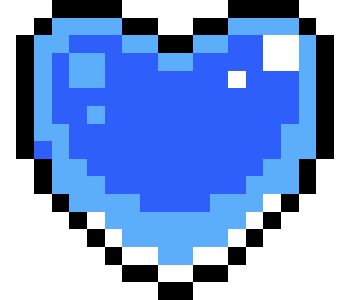

Collectibles
Celeste features various collectibles distributed throughout the levels. They can serve a purpose for the player beyond just providing an additional challenge.
To collect a strawberry, the player needs to stay on the ground for a few frames.
When collecting a strawberry, a visual indicator will appear on the screen showing that 1000 points have been gained, which has no practical use in the game. If multiple strawberries are collected in sequence, the visual score indicator will increase by 1000 points up to 5000. When the score reaches where it should display 6000, the indicator that will appear is "1UP".
The visual indicator when collecting the Moon Berry is "WOW"
Strawberries
Celeste has a total of 202 strawberries.
Strawberries are not necessary to complete or progress in the game; they serve solely as an extra challenge.
Depending on the quantity of strawberries the player has, the pie in the epilogue will be different.
• Red strawberry:
It is the most basic strawberry and is found in greater abundance in the game. They appear in every Side A, except for Chapter 6 and Chapter 9.

• Strawberry seeds:
Small collectibles that appear in various locations. The seeds are scattered in a single room. When collecting, the player must grab the remaining seeds without touching the ground; otherwise, the seeds will return to their respective locations. When all seeds are collected, an animation will start, showing the appearance of a red strawberry.

• Winged strawberry:
Special red strawberries that, when dashing in the room they are located, will fly to the top of the screen until they disappear. To attempt to collect it again, simply exit and re-enter the room to recharge it.
• Golden strawberry:
Obtained after completing the level while holding the golden strawberry. It can only be obtained after completing Side B of Chapter 8. It is collected by reaching the end of Chapter A, or by collecting the crystal heart from Chapter B or C. If the player dies while holding the golden strawberry, they will return to the beginning of the chapter.

• Winged golden strawberry:
An exclusive strawberry from Chapter 1 Side A. Obtained after completing the entire chapter without using the dash. It is located in the last room of the chapter. Before reaching the last room, the strawberry will only disappear if the player goes through a screen transition after using the dash. Therefore, if the player accidentally uses the dash, it is necessary to die before moving to another room.

• Moon Berry:
Exclusive strawberry from chapter 9. To obtain it, you need to have finished the chapter, so you must reach the final room again. After turning off the power in the room, the player needs to retrace their steps and make their way back to the top of the room. Afterward, the player will reach a secret room where they must die on the crystals, causing them to reappear on the other side of the room. Then, the player will enter a final secret room, where, near the end, the Moon Berry will be located. If the player has the golden strawberry, dying on the crystals will not send the player back to the beginning of the chapter.
Crystal Hearts
Celeste has a total of 24 crystal hearts, excluding the fake crystal heart found in chapter 9.
The hearts on Side A involve completing some type of puzzle, while on Side B and Side C, it is necessary to complete the level only.
• Side A: Blue Heart:
• Side B: Red Heart:

• Side C: Yellow Heart:

• Chapter 9: Gray Heart:

Cassette
Cassette tapes are present in all Side A levels except for chapter 9.
The cassette tape for the chapters will always be found in a secret room with multiple rhythm blocks.
Upon collecting a cassette tape, the player will be taken to the beginning of the room (except in chapter 8, where the player will be taken to the end) through a bubble.